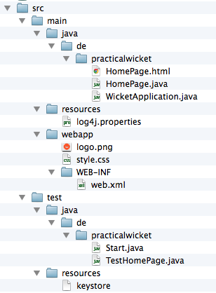
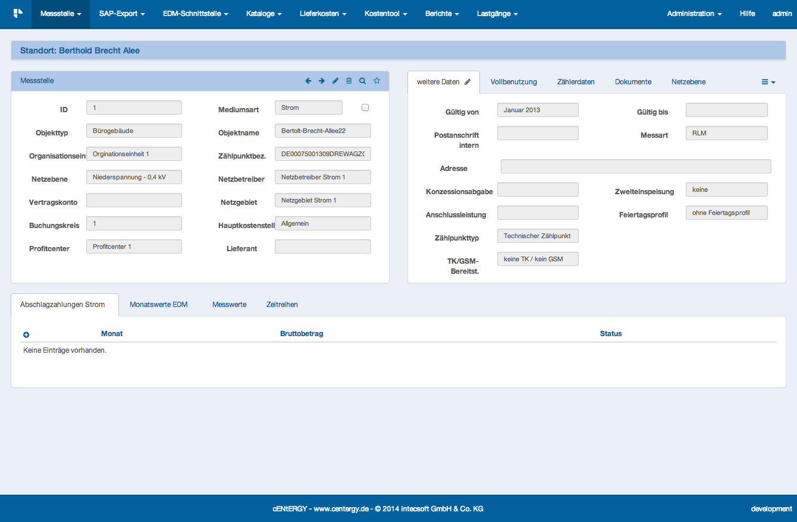
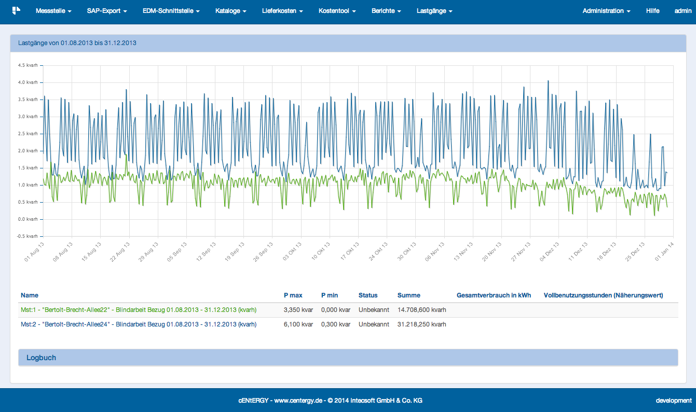
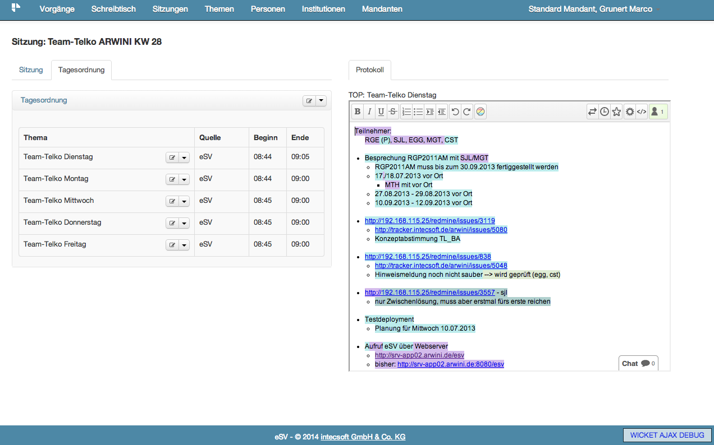

Web-Apps und Java
Practical Wicket
Wicket hat sich als ernstzunehmendes Framework für die Entwicklung von komplexen Informationssystemen etabliert. UI-Komponenten lassen sich einfach und intuitiv entwickeln, der Support durch die Community aus Anwendern und Entwicklern ist ausgezeichnet.
Diese Merkmale sind aber häufig nicht die ausschlaggebenden Argumente für oder wider den Einsatz eines Frameworks. Meist steht die Integration in eine vorgegeben Infrastruktur aus Frameworks, Entwicklungsrichtlinien, Wissensstand der Mitarbeiter an erster Stelle bei den Auswahlkriterien.
Welch gute Figur dabei Wicket macht zeigen wir anhand diverser Beispiele aus unserer täglichen Praxis. Von der Zusammenarbeit mit diversen Peristenzframeworks, Wickets Integration mit Spring oder CDI, der Integration von JQuery bis hin zur Arbeitserleichterung mit IDE-Plugins - anhand von konkreten Beispielen zeigen wir wie einfach die Arbeit mit Wicket sein kann.
Agenda
- Warum Apache Wicket?
- Grundaufbau einer Wicket-Anwendung
- Komponenten mit Daten verknüpfen
- Sichere Wicket Anwendungen
- Wicket für Macher
- Und nun...?
We are...
Bert Radke +BertRadke
XML is like violence. If it doesn't solve your problem, you're not using enough of it.
Marco Grunert @magomi
An optimist person will say that the glass is half-full.
A pessimist person will say that the glass is half-empty.
A programmer will say that the glass is twice as large as necessary.
Once upon a time...
- 2005: Wicket 1.0
- ...
- 2010: Wicket 1.5
- Generics
- 2012: Wicket 6
- Events
- Integration von JQuery
- Überarbeites Resourcehandling
- 2014: Wicket 7 beta
Why Wicket?
- Models sind Pojo
- Separation of Concerns
- Secure
- Reusable Components
- Support of Backbutton
- Localisation
- http://wicket.apache.org/meet/features.html
Los gehts...
mvn archetype:generate -DarchetypeGroupId=org.apache.wicket \
-DarchetypeArtifactId=wicket-archetype-quickstart \
-DarchetypeVersion=6.14.0 \
-DgroupId=de.practicalwicket -DartifactId=demo \
-DarchetypeRepository=https://repository.apache.org/ \
-DinteractiveMode=false
Projektstruktur
Java & HTML
public class HomePage extends WebPage {
private Person goethe = new Person("Goethe", "Mehr Licht!");
public HomePage() {
setDefaultModel(new CompoundPropertyModel<Person>(goethe));
add(new Label("name"));
add(new Label("famousLastWord"));
}
private class Person {
private String name;
private String famousLastWord;
private Person(String name, String famousLastWord) {...}
}
}
<!DOCTYPE html>
<html xmlns:wicket="http://wicket.apache.org">
<head<title>Famous last Words</title></head>
<body<
<span wicket:id="name">[name]</span> sagte
<span wicket:id="famousLastWord">[noch nichts]</span>
</body>
</html>
Pages, Components,...
Vererbung
public class BasePage extends WebPage {
private final String title;
public BasePage(String title) {
this.title = title;
}
@Override
protected void onInitialize() {
super.onInitialize();
add(new Label("title", title));
add(new BookmarkablePageLink<HomePage>("homepage", HomePage.class));
add(new BookmarkablePageLink<Page1>("page1", Page1.class));
add(new BookmarkablePageLink<Page2>("page2", Page2.class));
}
}
public class Page1 extends BasePage {
public Page1() {
super("Page 1");
}
}
Pages, Components,...
Composition
public class BasePage extends WebPage {
[...]
@Override
protected void onInitialize() {
[...]
add(getFooterPanel("footerPanel"));
}
protected Component getFooterPanel(String wicketID) {
return new EmptyPanel(wicketID);
}
}
public class Page1 extends BasePage {
[...]
@Override
protected Component getFooterPanel(String wicketID) {
return new Page1FooterPanel(wicketID);
}
}
Formulare
- Formulare am besten durch Models unterstützen
- einfache Hierarchie
- Formular
- Eingabekomponenten
- Aktionen
- automatische Konvertierungen
- Validatoren
Formular und Felder
Form<Registration> form = new Form<Registration>(
"form",
new CompoundPropertyModel<Registration>(new Registration())) {
@Override
protected void onSubmit() {
super.onSubmit();
setResponsePage(new RegistrationSuccess(getModel()));
}
};
form.add(new TextField<String>("email"));
form.add(new TextField<String>("userName"));
form.add(new PasswordTextField("password"));
Validierung
- Verschiedenste Validatoren mitgeliefert
- Zahlen, Textlängen
- Pattern, Range
- eigene Validatoren sind einfach:
userName.add(new IValidator<String>() {
@Override
public void validate(IValidatable<String> validatable) {
if (validatable.getValue().length() < 4 ) {
ValidationError validationError = new ValidationError().addKey("username.error");
validationError.setVariable("userName", validatable.getValue());
validatable.error(validationError);
}
}
});
Fehlerbehandlung
- manuelle Markierung fehlerhafter Element
- automatische Markierung
Goodies
- PageParameters
- Resourcen on the fly erzeugen
- Resourcebundles
- Security
- Internationalisierung
Test
- Build-In Unittesting
- Klasse WicketTester als zentrale Komponente
- Test von
- Interaktionen
- Status von Componenten
- Responses
- Ajax-Calls
- Überprüfung des erzeugten Markup
WicketTester
- WicketTester als Einstieg
WicketTester tester = new WicketTester(new WicketApplication());
- diverse assert-Methoden auf Wickettester
tester.startPage(HomePage.class);
tester.assertRenderedPage(HomePage.class);
tester.assertLabel("title", "Home Page");
tester.clickLink("registration");
tester.assertLabel("title", "Registration");
FormTester
- FormTester zum Testen von Formularen
- Eingabe von Daten
- Formular submitten
- Prüfung von Fehlermeldungen
WicketTester tester = new WicketTester(new WicketApplication());
tester.startPage(RegistrationPage.class);
FormTester formTester = tester.newFormTester("form", false);
formTester.setValue("userName", "jb");
[...]
formTester.submit();
tester.assertErrorMessages("invalid user name: jb");
Dependency Injection
- Spring
- JEE CDI
- Guice
Spring
- Listener in web.xml definieren
- Pfad zur Kontextdefinition eintragen
- Laden des Kontext in Applikation initieren
- Viel Spass mit Spring!
IDEs
- Ist das wirklich nötig?
- Einbindung über Plugins
- Eclipse: Qwickie
- IDEA: WicketForge
- Netbeans: ???
- WicketSource
- Kopplung von Browser und IDE
- Öffnen des Quellcodes direkt aus Browser
- IDEs: Eclipse und IDEA
- Browser: Firefox und Chrome
Energieabrechnung 1
Energieabrechnung 2
Sitzungsverwaltung
Mautsystem 1